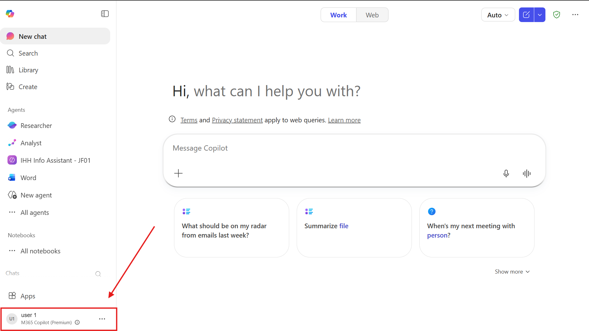

IHH Healthcare · M365 Copilot Executive Workshop
A hands-on immersion experience for Finance, Investment, Operations, Sustainability, Corporate Communications, Performance Management and Innovation leaders across IHH Healthcare.
About this workshop
A practical, executive-level immersion designed specifically for IHH Healthcare. We move from strategic context → live demos → hands-on exercises, ending with a preview of the Fabric Data Agent for cross-hospital analytics.
What you will leave with
- Experience using Researcher (Critique + Model Council) for multi-model market intelligence
- A working ESG dashboard built with Copilot in Excel, and a draft CR report section in Word
- Your own custom AI agent — Brand Governance, Finance Policy Advisor, or Sustainability Guide
- A clear mental model of what Copilot can do across your function — and what it cannot
- An understanding of what the Fabric Data Agent enables for cross-hospital analytics
What this workshop is not
- It is not a feature walkthrough — every tool is demonstrated in an IHH-specific context
- It is not about replacing clinical judgment or financial decision-making — Copilot drafts, you decide
- It is not connected to live IHH systems today — all data used is sample/anonymised
Agenda9:00 AM – 11:00 AM · 2 hours
Tools Used TodayM365 Copilot surfaces
Researcher (Critique)
Deep research with dual-model architecture — one model generates, another reviews for accuracy. Default "Auto" mode. DRACO benchmark: +13.88% over single-model.
Model Council
Submit one prompt to GPT and Claude simultaneously. See responses side-by-side with a summary of where they agree, diverge, and each model's unique insights.
Excel Copilot
Natural-language data analysis, dashboard creation, trend charts, and RAG status tables — no formulas needed.
Word Copilot
Document drafting — strategic memos, CR reports, board briefings — grounded on your uploaded data files.
PowerPoint Copilot
Presentation creation and storyline improvement — strategy decks, ESG investor updates, QBR presentations.
Agent Builder
Build a custom AI agent in 15 minutes, grounded on your SharePoint documents. Finance Advisor, Brand Agent, or Sustainability Guide.
Cowork
Delegate multi-step tasks to Copilot. Describe the outcome — "analyse ESG data, draft email, schedule meeting" — it creates a plan and checks in before taking actions.
Before You StartLog in · InPrivate/Incognito · Download files to OneDrive
You have been assigned a pre-provisioned M365 account. You must use this account — not your own corporate account — for all exercises today. This ensures everyone has the same Copilot access and licences.
Open a new InPrivate (Edge) or Incognito (Chrome) window before logging in. This prevents conflicts with your existing corporate account.
Edge: Press
Ctrl + Shift + N | Chrome: Press Ctrl + Shift + N | Mac: Press Cmd + Shift + N
Step 1 — Find your seat number and copy your account
Ask the facilitator for your seat number (1–25), then click your row below to copy the login details:
| Seat | Username | Password |
|---|
Step 2 — Log in to Microsoft 365
- In your InPrivate/Incognito window, go to m365.cloud.microsoft
- Enter your username and click Next
- Enter the password and click Sign in
- If prompted to stay signed in, click Yes
- Once on the M365 home page, you are ready for the exercises ✅
Once logged in, go to m365.cloud.microsoft. At the bottom left of the screen you should see your username with "M365 Copilot (Premium)" underneath it — exactly as shown below. If you see this, you're all set!

If you don't see "M365 Copilot (Premium)", raise your hand and a facilitator will help.
Step 3 — Download the sample files and save to your OneDrive
The exercises use sample data files. Download them now and upload to your OneDrive so Copilot can access them during the hands-on.
- Click each file below to download it to your laptop:
- Open a new browser tab and go to OneDrive — sign in with your workshop account if prompted
- Click + New → Folder upload or simply drag all 4 downloaded files into your OneDrive
- Wait for the upload to complete (the sync icon stops spinning ✅)
Exercise 1 · Strategic Intelligence15 min · Researcher + Model Council
Use Researcher's Critique mode (dual-model: generate + review) for deep competitive intelligence on Malaysia's private healthcare market, then use Model Council to see GPT vs Claude side-by-side.
Research Malaysia private healthcare market
In M365 Copilot, open Researcher. Keep the model selector on Auto — this activates Critique mode (dual-model: one generates, one reviews sources and evidence grounding). Use this prompt:
Side-by-side: GPT vs Claude on strategic opportunities
In Researcher, switch to Model Council in the model picker. Submit this prompt to see GPT and Claude respond simultaneously:
Turn research into a strategic memo
Open a new Word document. Use Copilot to draft a board-ready memo based on your Researcher output:
Exercise 2 · ESG/CR Analytics15 min · Excel + Word + Cowork
Consolidate 12 months of ESG metrics across 6 IHH hospitals, build an executive dashboard, and draft a CR report section — all using Copilot in Excel and Word.
Analyse carbon emissions and identify gaps
With the file open in Excel, open the Copilot panel (Home ribbon → Copilot). Run this analysis:
Build an executive ESG dashboard
Draft a CR report section
Open a new Word document. Reference your ESG analysis:
Delegate the whole workflow to Cowork
Cowork lets you describe an outcome and Copilot orchestrates the steps — with approval checkpoints before it takes actions like sending emails or scheduling meetings.
Exercise 3 · Build Your Agent20 min · Agent Builder · Choose your use case
Build a custom Copilot agent grounded on IHH's documents — no coding required. Choose the use case that matches your department. All three use the same Agent Builder workflow; only the knowledge sources and test queries differ.
Choose your use case
🏷️ Brand Governance Agent
Department: Corporate Communications
Automated brand compliance checks — reviews press releases, social posts, and investor communications against IHH brand guidelines. Available 24/7 to anyone in the organisation.
💰 Finance Policy Advisor
Department: Finance / Investment
Instant answers to financial policies, CAPEX approval workflows, budget guidelines, and compliance requirements. Reduces policy lookup from hours to seconds.
🌱 Sustainability Guide
Department: Sustainability / ESG
ESG knowledge assistant — carbon targets, waste protocols, Scope 2 calculations, CR reporting requirements. Supports sustainability champions at each hospital.
Agent Builder — step-by-step · Select a use case above ↑
Open Agent Builder and configure your agent
Go to copilot.microsoft.com → click Create → New Agent. Fill in the Name, Description, and Instructions fields using the content below — each has its own Copy button:
Connect knowledge sources from SharePoint
Click Add Knowledge → SharePoint. Upload or connect the relevant documents below:
Test your agent with 3 realistic queries
Use these test queries — verify the agent cites the source document and section correctly:
Share with your team
Once satisfied, click Publish → share the link with colleagues. They can access your agent directly from M365 Copilot without any technical setup.
Sample FilesDownload for hands-on exercises
All files use anonymised/sample IHH data. Do not use for operational decisions. Upload to SharePoint or open directly in Microsoft 365.
| # | File | Type | Used In | What It Contains |
|---|---|---|---|---|
| 01 | 01_Contoso_Market_Intelligence.xlsx | Excel | Ex 1 context | Global market overview, competitor profiles, M&A transactions, SWOT — across Malaysia, Singapore, Turkey, India & more |
| 02 | 02_Contoso_Sustainability_ESG.xlsx | Excel | Exercise 2 | 24 months ESG metrics across 6 hospitals + 2026/2030 targets, benchmarks, quarterly summaries |
| 03 | 03b_Contoso_Financial_Performance_BizChat.xlsx | Excel | Bonus / Ex 2 | P&L by hospital, budget vs actual, KPI dashboard, payer mix trends — optimised for M365 Copilot BizChat (150 rows/sheet) |
| 04 | 04_Contoso_Hospital_Policies.docx | Word | Exercise 3 | 7-section policy manual: financial approvals, KPIs, clinical governance, ESG, comms, HR, digital |
| 05 | 05_Contoso_Brand_Guidelines.docx | Word | Exercise 3 | 10-section brand guide: logo, colour, typography, tone of voice, messaging, social media, press release templates |